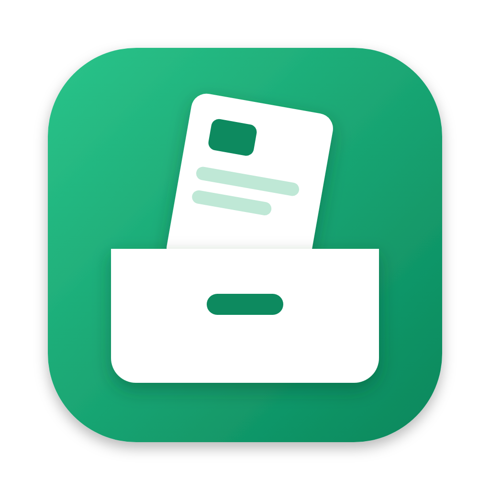
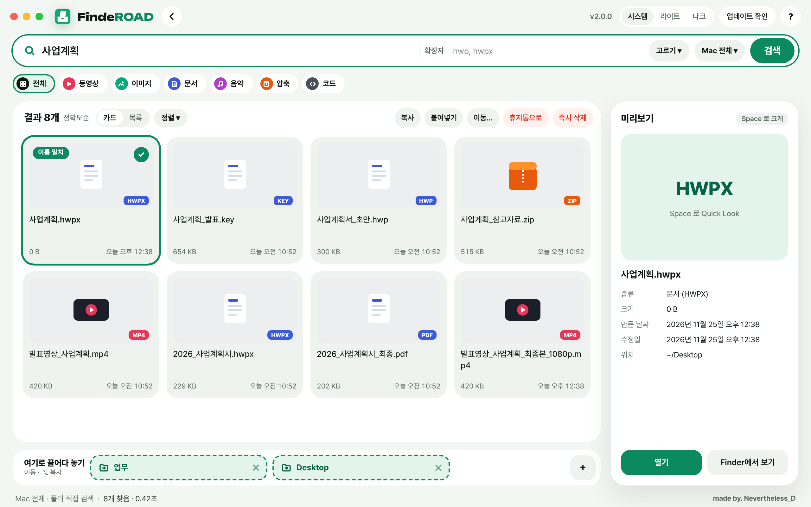

찾고 싶은 파일, 이름만 적어 보세요 — 찾기 · 미리보기 · 복사 · 이동 · 삭제를 한 창에서

받은 FINDEROAD.zip 을 더블클릭해서 풀어요.
FINDEROAD.app 을 Finder 왼쪽의 응용 프로그램 폴더로 끌어다 놓아요. 그래야 자동 업데이트가 돼요.
시스템 설정 → 개인정보 보호 및 보안 맨 아래에서 "그래도 열기" 를 눌러요. 다음부터는 바로 열려요.
큰 검색 칸에 파일 이름 일부를 쓰면 바로 찾아요. 띄어 쓰면 모든 낱말이 들어간 파일만 나와요.
확장자 칸에 hwp hwpx 처럼 여러 개를 넣으면 함께 찾아요(쉼표 · 띄어쓰기로 나눠요). 고르기 ▾ 를 누르면 종류별로 체크해서 골라요.
누르면 그 분류의 확장자가 더해지고, 다시 누르면 빠져요. 여러 개를 함께 켤 수 있어요. 전체 는 확장자 조건을 비워요. 직접 고르기 는 확장자 고르기 창을 열어요.
Mac 전체: Spotlight 로 먼저 빠르게 보여 주고, 그동안 폴더를 끝까지 직접 살펴 빠진 파일을 채워요. 찾는 동안 진행 막대가 보이고 그만 찾기(Esc) 로 멈춰요.
선택한 폴더: 폴더를 추가하거나 Finder 에서 창으로 끌어다 놓으면 여러 폴더를 함께 찾아요. 결과 화면에서는 검색 칸 오른쪽 범위 ▾ 에서 바꿔요.
결과는 카드(그림으로 크게) 또는 목록(표)으로 볼 수 있고, 고른 보기는 기억해요.
이름으로 찾으면 정확도순: 이름이 똑같은 파일(이름 일치 표시)부터 보여 줘요. 목록에서는 표 머리, 카드에서는 정렬 ▾ 로 이름 · 위치 · 크기 · 수정일 순서를 바꿔요.
결과를 끌어서 Finder 창 · 데스크탑에 놓으면 옮겨져요(다른 디스크로는 복사, ⌥ 는 복사).
화면 아래 여기로 끌어다 놓기 에 자주 쓰는 폴더를 ＋ 로 넣어 두면, 끌어다 놓거나 눌러서 바로 옮기거나 복사해요.
숨김 파일이나 라이브러리 폴더까지 찾으려면 검색 범위의 숨김 · 시스템 파일도 찾기 를 켜요.
오른쪽 위 ? 를 누르면 모든 단축키를 한눈에 볼 수 있어요.
| 미리보기 | Space | 오른쪽 칸에 이미지 · 동영상 · 음악 · 글이 바로 보여요. Space 를 누르면 Quick Look 으로 크게 봐요. |
| 열기 | Enter | 두 번 눌러도 열려요. ⌘R 은 Finder 에서 위치 보기. |
| 복사 · 붙여넣기 | ⌘C ⌘V | Finder 에서 ⌘V 로 바로 붙여넣을 수도 있어요. 붙여넣기는 넣을 폴더를 고르는 창이 떠요. |
| 이동 | ⌘⇧M | 옮길 폴더를 고르면 옮겨져요. |
| 휴지통으로 | ⌘⌫ | 맥의 휴지통으로 옮겨요. 실수했다면 ⌘Z 또는 알림의 '되돌리기'. |
| 즉시 삭제 | ⌘⌥⌫ | 확인 창에서 영구 삭제 를 누르면 휴지통을 거치지 않고 바로 지워요. |
| 이전 검색으로 | ⌫ ⌘[ | 바로 전에 찾던 검색으로 돌아가요. 첫 검색에서 누르면 첫 화면으로. 글 칸에서는 글자만 지워요. 맨 위 ‹ 단추도 같아요. |